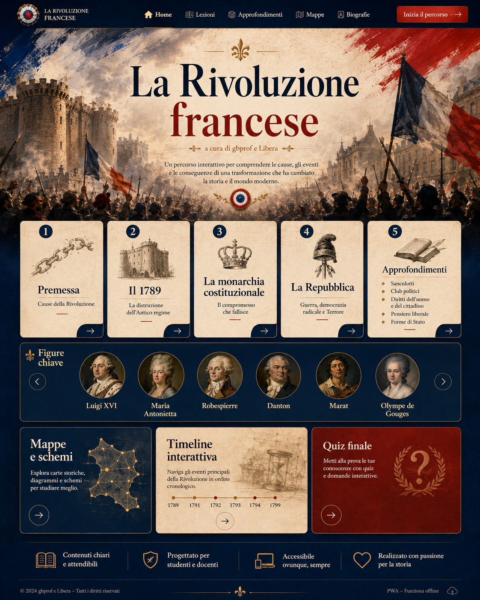

Home Lezioni Approfondimenti Mappe Biografie Inizia il percorso Premessa Il 1789 Monarchia costituzionale La Repubblica Approfondimenti Figure chiave Mappe e schemi Timeline interattiva Quiz finalePWA didattica
La Rivoluzione francese
a cura di gbprof e Libera. Percorso interattivo con lezioni, mappe, approfondimenti, biografie, timeline e quiz finale.